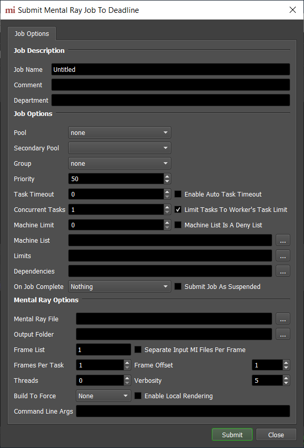
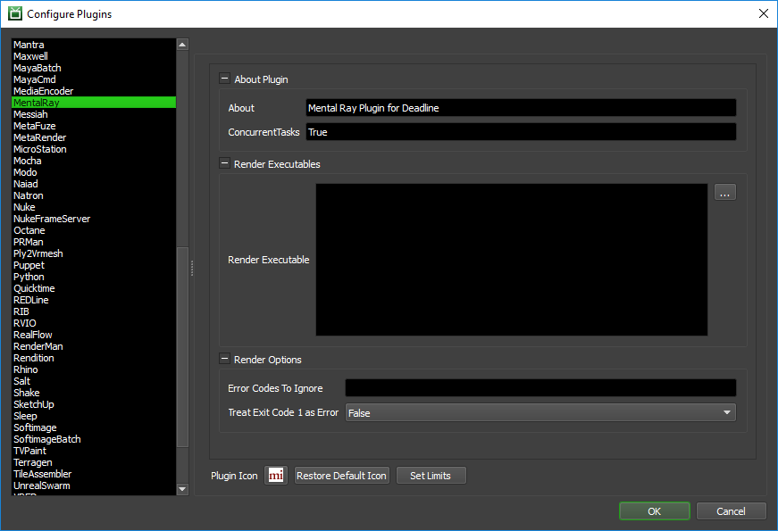

Mental Ray Standalone¶
Job Submission¶
You can submit Mental Ray Standalone jobs from the Monitor or via an in-app submitter such as MayaBatch as an export job.
Setup your Mental Ray Files¶
Before you can submit a Mental Ray Standalone job, you must export your scene into .mi files. You can export into either one .mi file with all your frames in it, or one .mi file per frame.
Submission Options¶
The general Deadline options are explained in the Job Submission documentation, and the Draft/Integration options are explained in the Draft and Integration documentation. The Mental Ray specific options are:
- Mental Ray File: The Mental Ray file(s) to be rendered.
If you are submitting with one frame per .mi file, select one of the numbered frames in the sequence, and Monitor will automatically detect the frame range. In this case, you should leave the checkbox marked Separate Input MI Files Per Frame checked. The frames you choose to render should correspond to the numbers on the .mi files.
If your .mi file contains all the frames you wish to render, you should leave the Separate Input MI Files Per Frame box unchecked. In this case, you must specify the Input MI File Start Frame, which is the first frame in the input MI file being rendered, as it is used to offset the frame range being passed to the mental ray renderer. You may then specify the frame range as normal.
Output Folder: The location to which your output files will be written.
Separate Input MI Files Per Frame: Should be checked if you are submitting a sequence of MI files that represent a single frame each.
Frame Offset: The first frame in the input MI file being rendered, which is used to offset the frame range being passed to the mental ray renderer.
Threads: The number of threads to use for rendering.
Verbosity: Control how much information Mental Ray prints out during rendering.
Build To Force: You can force 32 or 64 bit rendering.
Enable Local Rendering: If enabled, the frames will be rendered locally, and then copied to their final network location.
Command Line Args: Specify additional command line arguments you would like to pass to the mental ray renderer.
Plugin Configuration¶
You can configure the Mental Ray plugin settings from the Monitor. While in power user mode, select Tools -> Configure Plugins and select the Mental Ray plugin from the list on the left.
Render Executables
Render Executable: The path to the Mental Ray Standalone executable file used for rendering. Enter alternative paths on separate lines.
Render Options
Error Codes To Ignore: Mental Ray error codes that Deadline should ignore and instead assume the render has finished successfully. Use a ; to separate the error codes.
Treat Exit Code 1 As Error: If set then Exit Code 1 will not be treated as success.
FAQ¶
Can I submit a sequence of MI files that each contain one frame, or must I submit a single MI file that contains all the frames?
Deadline supports both methods.
When rendering a single MI file that contains all the frames, the frame range I tell Deadline to render doesn’t match up with the files that are actually rendered.
When submitting a single MI file that contains all the frames, make sure the Input MI File Start Frame option is set to the first frame that is in the MI file. This value is used to offset the frame range being passed to the mental ray renderer.
Mental Ray is printing out an error that is causing Deadline to fail the render, but when I render from the command line outside of Deadline, the error is still printed out, but the render finishes successfully.
By default, Deadline fails a Mental Ray job whenever it prints out an error. However, you can configure the Mental Ray plugin to ignore certain error codes, which are printed out alongside the error in the error lob.
After a frame is rendered, Deadline takes a long time releasing the task before it moves on to another. What’s going on?
This can occur when a single MI file that contains all the frames is submitted to Deadline. Try exporting your frames to a sequence of MI files (one per frame) and submit the sequence of MI files to Deadline instead.
Error Messages and Meanings¶
This is a collection of known Mental Ray error messages and their meanings, as well as possible solutions. We want to keep this list as up to date as possible, so if you run into an error message that isn’t listed here, please visit the Thinkbox Help Centre and let us know.
Currently, no error messages have been reported for this plugin.

{kind=link}
{kind=link}